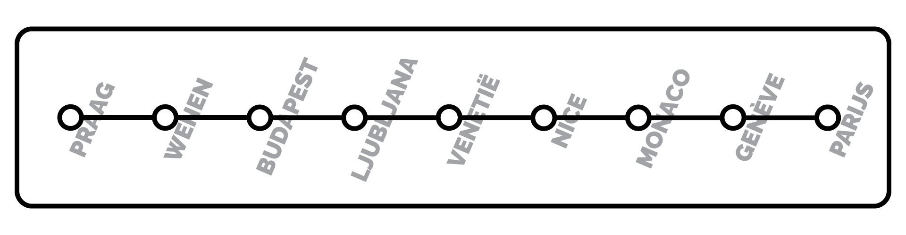

`
in 2022 heb ik mijn VWO diploma na 7 jaar behaald. Omdat ik geen idee had wat ik wilde studeren besloot ik een tussenjaar te nemen om te werken, rusten en om na te kunnen denken over wat ik wilde gaan studeren. Uiteindelijk kwam een maatje van mij met het idee om een rondreis te doen. Ik wilde niet een maand weg zijn, maar we wilde wel een mooi rondje maken. Na veel uitzoeken waar we naar toe wilde kwamen op een route uit die ons door veel van de grootste hoofdsteden in Europa leidde. Ook was 1 van onze doelen om zo goedkoop maar comfortabel mogelijk te reizen. Daardoor hebben we alle reizen afgelegd met de Flixbus service en sliepen we in veel steden in hostels. Het was een bijzonder mooie, maar uiterst uitputtende reis met veel slaaptekort, maar geweldige herrineringen! Deze website is gemaakt als eerbetoon naar deze reis omdat ik hem nooit wil vergeten.
